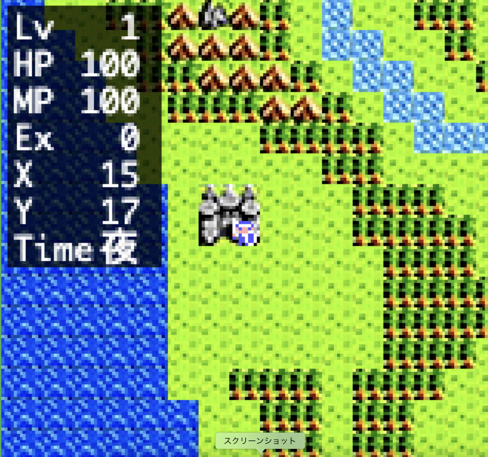

フィールド上のタイルの効果
戻る
海・川・岩山 移動出来ない
草原・森・山・スタート地点(上半分) 特に無し
スタート地点(下半分) HP全回復
呪い
解除(一部解除出来ない物もある)
プレイヤー
初期スポーン地点
集落 HP全回復
呪い
解除(一部解除出来ない物もある)
家 HP全回復
赤い魔女
撃破後
ショップ
オープン
洞窟
魔女
撃破前 鍵入手
魔女
撃破後 謎の空間と行き来可能(
赤い魔女
と
服従の魔女
はこの先に居る)
扉 鍵を持っていないと通行不可能
ボスマーク 特定のボスが出る
出るボス一覧
ボス
撃破前
ボス
ボス
撃破後
魔女
魔女
撃破後
赤い魔女
赤い魔女
撃破後
服従の魔女
魔女
・
赤い魔女
・
服従の魔女
はアプリ版限定
状況によってはボスが居ない場合がある